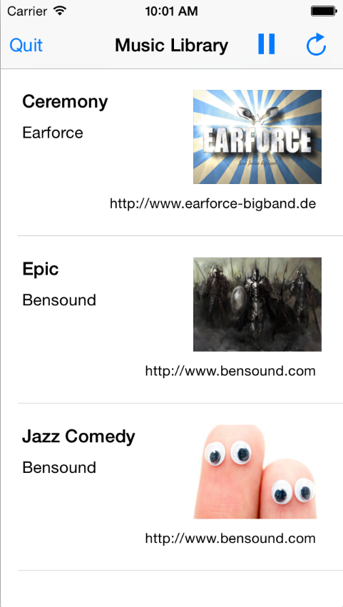

Duration
15 minutes
Goals
The starter application supports playing music. It will currently stop playing when the application is backgrounded, your goal is to fix it so that it will continue playing if the app is backgrounded and react to remote control events. 
Required assets
The provided Exercise 1 folder contains a sub-folder named Lab.Start with a solution you will use as a starting point. There is also a Lab.Completed folder with the completed code if you want to compare your final solution.
Exercise Overview
Here are the high-level steps you will need to perform. Use these to complete the exercise and refer to the more detailed step-by-step instructions to fill in any necessary details. In most places, the //TODO comments will indicate the code that needs to be added or changed.
-
You will need to create and configure the audio session in the MusicListController.cs
ViewDidLoadmethod. The code you need is already in the method (commented out). -
When a song is selected, the application will call the
PlayAudio()method. You will need to create an instance of theAVAudioPlayerand initialize it with the song that should be played (passed into the method) and then callPlayto start the playback. At this point the program will successfully play the music. - You will need to register the proper backgrounding modes in the application info.plist. This is what will allow the music to play in the background.
-
To add support for remote control events, you will need to call
BeginReceivingRemoteControlEventsin theViewDidAppearoverride. The reverse operation to turn off notifications should be done in theViewDidDisappearoverride. You can play/pause the music through the Control Center (swipe up from the bottom of the screen).
Steps
Below are the step-by-step instructions to implement the exercise.
Configure the Audio Session
Every application that wants to output audio has to configure global behavior. This is done through the AVAudioSession class. This is available through a singleton: AVAudioSession.SharedInstance(). You must define the category you want to use and then set the session active.
-
Open the starter solution and read through the code of the MusicListController.cs. This is the controller that is responsible for all of the application's behavior.
- It populates a table view with songs included into the application.
-
Tapping an entry of the list will start playing the song through the
PlaySongmethod.
-
Locate the
ViewDidLoadmethod. - Uncomment the code used to setup the audio session. This sets the category to be Playback and activates the audio session.
Play music while the application is in the foreground
There are multiple ways to play audio in iOS. Our application uses the AVAudioPlayer which is one of the simplest. You need to create a new instance of the player object and pass it an NSUrl that points to the location of the file to play. The application comes with three songs stored as content in the Songs folder.
-
When a song is selected, the application will call the
PlayAudio()method. In this method, create an instance of theAVAudioPlayer(there is already a class memberaudioPlayerthat you can use).-
Information about the song is wrapped in a
SongInfoobject that has a propertyFullDestinationFilePathwhich contains the full path of the song. You will need to wrap this path in aNSUrlobject and pass it into the constructor (useNSUrl.FromFilenameto create the URL). - Pass "mp3" as the file type hint.
-
Pass the existing
NSerrorfield declared above theTODOmarker as an output parameter.
-
Information about the song is wrapped in a
-
To start playback, use
AVAudioPlayer.Play()if there was no error - there is a//TODOcomment marker to indicate the proper position for this code. - At this point you can run the application and you should be able to play a song and listen to it while the application is in the foreground.
Enable background support
The application now plays music, but it will not play any audio if it is backgrounded. You still have to enable the audio background mode.
- Double-click on the info.plist file in the Solution Explorer to open the GUI editor.
- In Visual Studio for Mac, scroll all the way down, check the "Enable Background Modes" box and then enable the Audio and Airplay background mode.
- In Visual Studio on Windows, select the "Background Modes" tab to show the options, check the "Enable Background Modes" box and then enable the Audio and Airplay background mode.
- Run the application, start playing some music and then hit the Home button to background the application - it should continue playing the music.


Support remote control events
If you open the Control Panel by swiping up from the bottom of the screen while your application is playing music you will see the title and artist of the song currently playing. However you will not be able to pause or skip to the next song. To support this, your application needs to react to remote control events.
-
Find the
ViewDidAppearmethod and use theUIApplication.BeginReceivingRemoteControlEventsmethod to start receiving events. This is an instance method so you will need the shared application to call it. In addition, to ensure that this view controller is part of the responder chain, add a call toBecomeFirstResponderright after you enable the events. -
To unsubscribe, find the
ViewDidDisappearmethod and use theUIApplication.EndReceivingRemoteControlEventsmethod to turn off remote control events. Resign the first responder position through theResignFirstRespondermethod. -
Run the application, start playing music, and use the Control Panel to pause the music. This will call into the
RemoteControlReceived()method which has already been implemented for you. You can set a breakpoint into this method to see how it works. Note that this implementation is very simple - it does not distinguish between pause / stop for example.
Summary
In this exercise you have added audio output to an application and enabled the corresponding background mode so that music can be played even if the application is backgrounded.